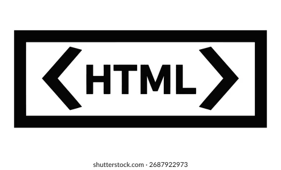

Basics of Web Development
What is Browser?
- A browser is a software application used to open and view websites on the internet.
- It reads HTML, CSS, and JavaScript code and displays webpages to users.
- Examples : Google Chrome and Microsoft Edge
What is Website?
- A website is a collection of web pages connected together and available on the internet.
- People can open a website using a browser.
- Examples : Google and amazon
what is webpage?
A webpage is a single page of a website displayed in a browser. like Home page and
about page etc.,
What is http?
- HTTP stands for HyperText Transfer Protocol.
- HTTP is a protocol used to transfer data between browser and web server.
What is https?
- HTTPS stands for HyperText Transfer Protocol Secure.
- HTTPS is a secure protocol used to transfer data between browser and web server.
- Its protects user data like passwords and baning details and personal information
What is DNS?
- DNS stands for Domain Name System.
- DNS converts website names into IP addresses.
what is url?
- URL stands for Uniform Resource Locator.
- URL is the address of a webpage or website on the internet.
What is Difference between url and ip address?
| URL |
IP Address |
| Web address name |
Numerical address |
| Easy for humans to remember |
Difficult to remember |
| Example: https://www.google.com |
Example: 142.250.183.206 |
| Used in browser |
Used by computers and servers |
what is Domain?
A domain is the unique name of a website on the internet. like google
What is WWW?
- WWW stands for World Wide Web.
- WWW is a system of interconnected webpages and websites on the internet.
- www helps access the website through the web.
what is server?
Server is a computer that provides data or services to other computers.
What is Database?
Database is a collection of organized data stored electronically. Examples :
Orcale and MySQL Database
What is Floder and File?
- A folder is a container used to store files and other folders.
- File is a single document or data stored in a computer. Example : index.html,image.jpg and music.mp3
what is extension?
Extension tells what type of file it is. like index.html and photo.jpg
HTML COMPLETE EXPLANATION

What is Markup language?
A markup language is a language used to structure and format
content using tags.
What is html?
- HTML stands for HyperText Markup Language.
- HTML is a markup language used to create webpages and it gives structure to the content and
uses Tags
What is Tag?
Tags are predefined keywords written inside angle brackets <>.
What are types of Tags?
There are divided into Two types that is container Tag and another
one is self closing tags
What is container tag?
Container tag contains content between opening and closing tags and
Example : See comment
what is self closing tag?
A self-closing tag is a tag that does not need a closing tag and Example : See comment